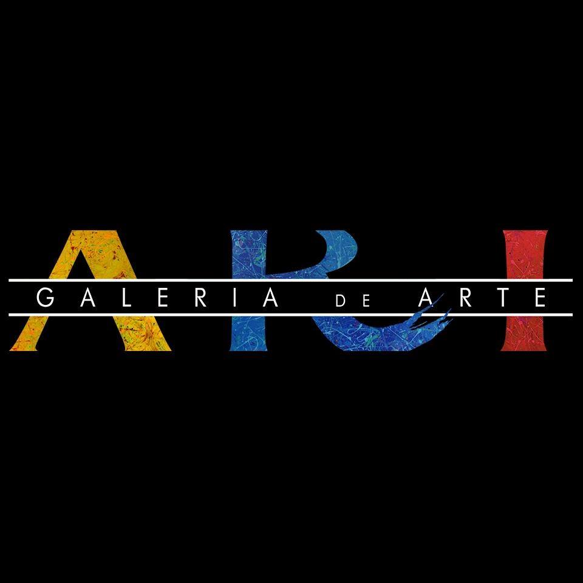
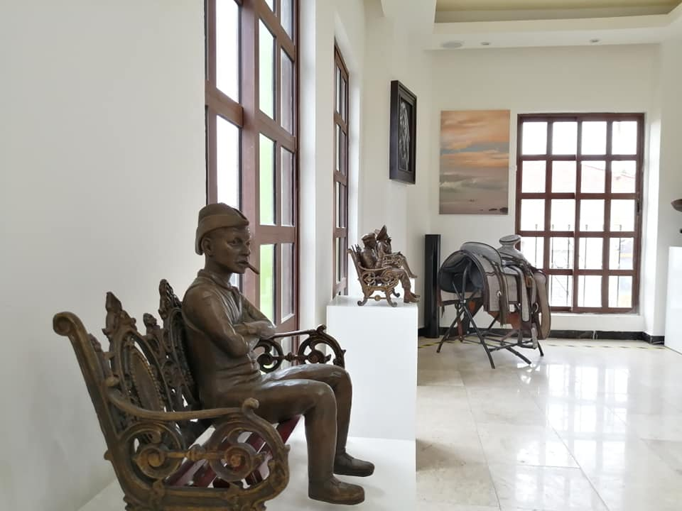

<section class="div-fluid bg-beige">
  <div class="container">
    <div class="row">
      <div class="col-sm-12 col-md-4 mb-4">
        <mat-card class="cont-card">
          <mat-card-title class="text-muted">Nuestra Historia</mat-card-title>
          
          <mat-card-content>
            <p class="text-justify">
              ARI Galería de arte nace del amor mas profundo del ser humano, que es hacia los hijos, familia, seres
              queridos, amigos y hacia la vida misma. De seguir pensando, desarrollando, innovando, pero sobre todo
              de estar entretenidos. Hace tres años, se comienza con la remodelación del actual edificio, pensando
              en el proyecto que ahora se encuentra cristalizado, solo con el objetivo de servir y contribuir al
              acervo cultural de nuestro de nuestro país.
            </p>
          </mat-card-content>
        </mat-card>
      </div>
      <div class="col-sm-12 col-md-4 mb-4">
        <mat-card class="cont-card">
          <mat-card-title class="text-muted">Misión</mat-card-title>
          
          <mat-card-content>
            <p class="text-justify">
              Difundir las obras de artes con calidad, así como las actividades culturales en el Estado.
            </p>
          </mat-card-content>
        </mat-card>
      </div>
      <div class="col-sm-12 col-md-4 mb-4">
        <mat-card class="cont-card">
          <mat-card-title class="text-muted">Visión</mat-card-title>
          
          <mat-card-content>
            <p class="text-justify">
              Atraer la atención de las personas hacia el arte, concientizando a la sociedad a un pensamiento más
              reflexivo, siendo este un centro y espacio de integración para las bellas artes.
            </p>
          </mat-card-content>
        </mat-card>
      </div>
    </div>
  </div>
</section>
